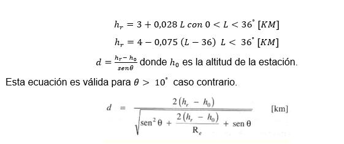
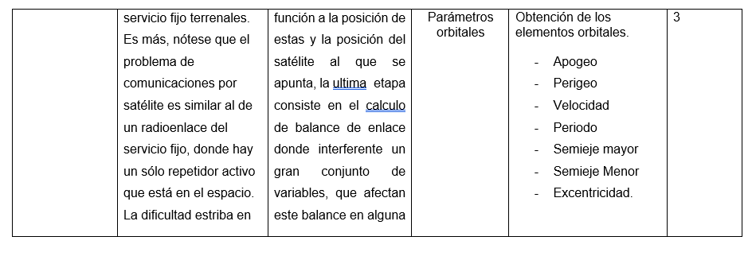
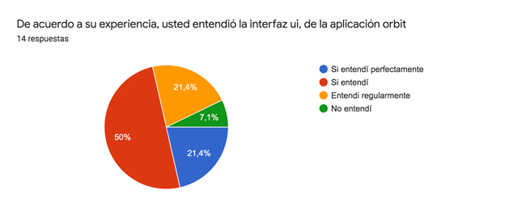

Aplicación web basado en la metodología de dinámica de sistemas para optimizar el tiempo del diseño de enlaces satelitales en orbita geoestacionaria para la A.B.E.
Autor Ditmar Castro
Introducción
En 1901 consiguió la primera comunicación radio telegrafía transatlántica

Un límite físico
Históricamente el 4 de octubre de 1957 Rusia puso con éxito el primer satélite artificial activo llamado Sputnik 1

Bolivia adquirió en el 2013 el TKSAT-1 (Túpac Katari)
Cálculo de enlace
- backoff del satelite
- Backof de subida
- factor R
- Frecuencia de bajda
- Frecuencia de subida
- Ganancia de bajda
- Ganancia de subida
- Ganancia de la antena del satelite
- Latitud estacion terrena Longitud estación terrena
- lngdown: this.longitud2,
- lngdown: this.longitud2,
- lngup: this.longitudup,
- longitud: Number(this.longitud),
- noisetemp1: this.k1,
- noisetemp2: this.k2,
- perdidas: this.perdidasat,
- perdidasdown: this.perdidas_entre_amplicador_antenadown,
- perdidasup: this.perdidas_entre_amplicador_antena,
Problema
¿En que medida puede optimizar el tiempo una Aplicación web basado en la metodología de dinámica de sistemas el diseño de enlaces satelitales para la Agencia Boliviana Espacial?
Objetivo
Desarrollar un Aplicación web basado en la metodología de dinámica de sistemas para optimizar el tiempo del diseño de enlaces satelitales para la Agencia Boliviana Espacial.
Objetivos específicos 1
1.) Sistematizar los fundamentos teóricos del desarrollo de Aplicación web, metodología de dinámica de sistemas y el diseño de enlaces satelitales.
Objetivos Especifico 2
2.) Diagnosticar el diseño de enlaces satelitales para la Agencia Boliviana Espacial.
Objetivos Especifico 3
3.) Diseñar los módulos necesarios del Aplicación web basado en la metodología de dinámica de sistemas. para optimizar el tiempo del diseño de enlaces satelitales para la Agencia Boliviana Espacial.
Objetivos Especifico 4
4.) Realizar prácticas de simulación para la validación de resultados.
Hipotesis
Desarrollar una Aplicación web basado en la metodología de dinámica de sistemas optimiza el tiempo del diseño de enlaces satelitales para la Agencia Boliviana Espacial.
2. MARCO TEÓRICO
- Dinámica de Sistemas
- Mecánica Orbital
- Calculos de Enlace
Dinámica de Sistemas
La dinámica de sistemas es una metodología que es útil para construir modelos de simulación que han de permitir decidir cuál de varias propuestas es más eficaz para solucionar el problema planteado, puede responder con facilidad a la pregunta del que pasaría sí y así poder evaluar diversos escenarios de simulación
Ejemplo 1
Ver EjemploEjemplo 2
Ver EjemploMecánica Orbital
- Las leyes de Kepler
- La ley de la fuerza gravitacional de newton.
- Elementos Orbitales
Las leyes de Kepler
-
Primera ley de kepler
La excentricidad es el grado de desviación de una sección cónica respecto a una circunferencia, se tiene para el semieje mayor α y el semieje menor β se define la excentricidad como
Segunda ley de kepler
La segunda ley de Kepler, también conocida como ley de las áreas, y establece que para intervalos iguales de tiempo, un satélite barre áreas iguales en el plano de su órbita, con foco en el baricentro, para un satélite que recorre las distancias D1 y D2 metros en 1 segundo, las áreas A1 y A2 son iguales. Debido a la ley de áreas iguales, la distancia D1 debe ser mayor que D2 y, en consecuencia, la velocidad V1 debe ser mayor que la velocidad V2. La velocidad es máxima en el punto de máxima aproximación a la Tierra (llamado perigeo), y la velocidad es mínima en el punto más alejado de la Tierra llamado apogeo
Tercera ley
Se llama a veces la ley armónica. Establece que el cuadrado del periodo (el tiempo en recorrer la órbita) es proporcional al cubo de la distancia promedio entre el primario y el satélite, Esta distancia promedio es igual al semieje mayor; por lo anterior, se puede enunciar matemáticamente la tercera ley de Kepler como sigue
La ley de la fuerza gravitacional de newton.
$ F = G * (\frac{m_{1} * m_{2}}{r^2}) * \vec{r} $Elementos Orbitales

2.5.11 Elementos Orbitales en formato “TLE” norad
El formato denominado TLE (Two-Line Element set) de NORAD (North American Aerospace Defence Command) será el empleado para obtener los elementos orbitales medios que servirán como punto de partida para los propagadores de orbita sgp4.
Ejemplo
La linea L2, puede estar sujeto a cambios, en base a observaciones satelitales.
Propagador de Orbita SGP4

Tipos de Orbitas
Calculo de Enlace
Calculo de enlace
|
Angulo de Elevación |

Ángulo Azimut |
|
Distancia entre la estación terrena y el satelite |
Atenuación Por absorción atmosférica
|
$[L_{a.a}]_{dB}= [L_{cenit}]_{dB} * cosec(\theta )$ |
|
Atenuación Por lluvia, Modelo de Crane

|
Atenuación Por lluvia, Modelo de Crane
|  | |
PIRE
$ PIRE=Pt Gt [W] $
$ [PIRE]_dBW=10 log(P_t )+[G_t ]_dbi [dBW] $
| Perdida en los conectores | Ruido térmico |
| Factor o figura de ruido | Factor de calidad y figura de mérito |
| Relación total de Potencias. |
Marco métodologico
Alcancé de la investigación
El proyecto de investigación tiene un alcance exploratorio, ya que se propone la creación de una aplicación web desarrollada desde la perspectiva de la dinámica de sistemas, para el calculo de enlace satelital hacia estaciones terrenas.
3.1.2.4 Diseño de la investigación
Se aplicará un diseño de investigación cuasi experimental donde se evaluará el software en una población definida no aleatoria, con el grupo experimental se propondrá diferentes escenarios y problemas específicos sobre enlaces satelitales, que deberán ser resueltos con la herramienta, dando como resultado los informes generados, de dicha población seleccionada.
Población y muestra
La población selecciona son 20 estudiantes, y 3 profesionales del área de sistemas e informática, más 2 ingenieros de la ABE.
3.1.3.1 Variable dependiente
Diseño de enlaces satelitales en orbita geoestacionaria para la Agencia Boliviana Espacial.
Variable Dependiente
Diseño de enlaces satelitales en orbita geoestacionaria para la Agencia Boliviana espacial
Operazionalización de variables
Operazionalización de variables
Operazionalización de variables
Variable Independiente
Aplicación Web basado en la Metodología de dinámica de sistemas.
Variable Independiente
Variable Independiente
Variable Independiente
Instrumentos
Propuesta
Fase de pruebas
Fase de pruebas
El error máximo se encuentra en el satélite vinasat 2 con 20,264 kilómetros y el error mínimo con 0,111 kilómetros en optus 10.
Parametros
Comparación de resultados con satmaster uplink
Comparación de resultados con satmaster downlink

Validación de usabilidad y velocidad en la creación de enlaces.
Validación de usabilidad y velocidad en la creación de enlaces.
Validación de usabilidad y velocidad en la creación de enlaces.
Validación de usabilidad y velocidad en la creación de enlaces.
Validación de usabilidad y velocidad en la creación de enlaces.
Validación de usabilidad y velocidad en la creación de enlaces.
Validación de usabilidad y velocidad en la creación de enlaces.
Validación de usabilidad y velocidad en la creación de enlaces.
Conclusiones
- La sistematización de los fundamentos teóricos condensada en el capitulo 2 fue fundamental para la elaboración correcta de la aplicación web.
- El diagnostico que se realizó al diseño de enlaces satelitales para la Agencia Boliviana Espacial, dio resultados positivos, permitiendo entender los conceptos teóricos acerca de la mecánica orbital y los elementos necesarios para programar correctamente los balances de enlace.
Conclusiones
- Haciendo uso de la metodología de dinámica de sistemas y la metodología de trabajo scrum se diseñaron y desarrollaron los módulos necesarios, para la aplicación web, como ser aplicación del algoritmo propagador de orbita sgp4 en un espacio tridimensional para visualizar la mecánica orbital, desarrollar las interfaces necesarias para la interacción con el usuario final y crear los algoritmos necesarios para el calculo de enlace.
Conclusiones
- Se simularon distintos escenarios y se pudieron validar los resultados tanto del propagador de orbita y los resultados obtenidos en el cálculo de enlace estos se validaron con ayuda de algunas herramientas, como ser satmaster, también se valido la usabilidad del mismo con un grupo de estudiantes dispuestos a realizar la evaluación basándose en un problema concreto del libro “Comunicaciones Satelitales” de Rodolfo Nery Vela.
Recomendaciones
- Se recomienda estudiar y agregar más propagadores de orbitas e incluirlas dentro del modelo 3d, como ser el algoritmo sgp8.
- Se recomienda estudiar y agregar un modulo que permita la simulación de balance de enlace para satélites en órbita LEO y GEO.
Recomendaciones
- Se recomienda unir el sistema a un sistema externo “API” de predicción meteorológica, para lograr una simulación de condiciones climáticas más adecuadas y tener un modelo más próximo a la realidad.
- Para un correcto manejo del sistema se recomienda una capacitación para conocer todas sus funcionalidades, o verificar los videos creados más el manual de usuario para su uso correcto.